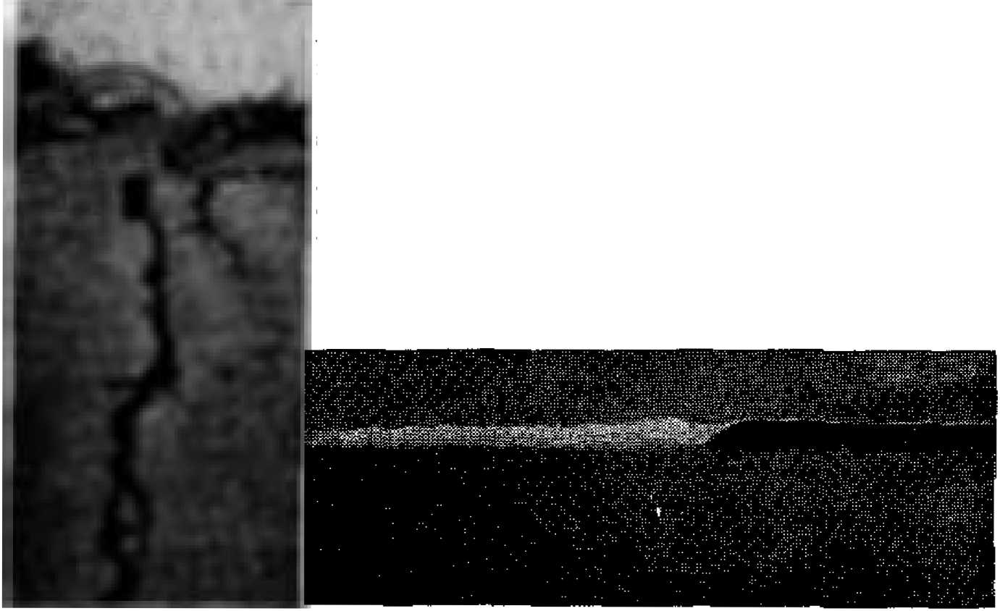
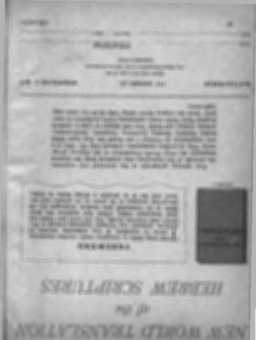

CHRISTMAS —DOES IT MAKE SENSE? Is all this in the name of Christ?
The Many Loves of Money
Are you tempted by greed’s lures?
What Socrates and Plato Did for Democracy Their antidemocratic ideas are put to latter-day practice
The Hope of the New World
The conditions under which the
DECEMBER 22 1Q.W rfmtvhkhwv
News sources that are able to keep you awake to the vital issue* of our times must be unfettered by censorship and selfish interests. *’Awake J” has no fetters. It recognises facts, faces facts, is free to publish facts. It is not bound by political ambitions or obligations; H is unhampered by advertisers whose toes must not be trodden on; it is unprejudiced by traditional creeds. This Journal keeps itself free that it may speak freely to you. But it does not abuse its freedom. It maintains integrity to truth.
"Awake 1*’ uses the regular news channels, but is not dependent on them. Its own correspondents are on all continents, in scores of nations. From the four corners of the earth their uncensored, on-the-scenes reports come to you through these columns. This Journal*® viewpoint is not narrow, but is International It is read in many nations, In many ■ languages, by persons of all ages. Through its pages many fields of knowledge pass in review—government, commerce, religion, history, geography* science, social conditions, natural wonders—why, its cover* age is as broad as the earth and as high as the heavens.
"Awake r pledges itself to righteous principles, to exposing hidden foes and subtle dangers, to championing freedom for all, to comforting mourners and strengthening those disheartened by the failures of a delinquent world, reflecting sure hope for the establishment of a righteous New ’World.
Get acquainted with "Awakei” Keep awake by reading "Awake 1**
Published Semimonthly by WATCHTOWER BIBLE AND TRACT SOCIETY. INC.
117 Adams Street Brooklyn 1, N. Y.( U. S. A.
K. H, Knohr, PrerfdeM Chant Suiter, fieoretary
Printing thia Issue: 1,130,000
Five cents a copy
ftcmittaMHi Hhcrald be sent to office in your country in compliance with regulations to guarantee sale delivery of money. Remittances are accepted at Brooklyn from countries where no office la Jota ted, by International money order only. SutaCriptlon ratefl in different countries are here stated In local currency, N alite of expiration (with renewal blank I li sent at Jwt two iMKUfts before subscription expires, Gtanve of adrfrrn when sent to our office may be expected effective wllhln one month. Send your Old IB Well as new uddresS.
Act of March 3, 1870. Printed In U> 8 A.
Langaapti In which tkh mainline li pnhllihed: Semimonthly—Afrikaans, English, Finnish, French, Germ tn, HollSadJflb, Norffegiaii, Spanish, fikedlaii. Monthly—Danish, Greek, Portuguese, Ukrainian.
Offices Yearly subscription Kate
Amrita, U.S., 11T Adams St., Brooklyn 1, N.¥.
Aaitralla, 11 Beresford Bd., Strathfield, KS.W. 8g Canaft, 40 fnria Are . Tohwrto 5, OEtsria 11 fHOfand, 54 Craven Terrace, Lontfon, W. 2 Ta Soath Africa, Private Bag. P.O, EJandtfooietn,
Transvaal 7s
Entered as seeond-daas matter at Brooklyn, N. Y
CONTENTS
|
A Woman President lor the LT. N. |
3 |
Earthquake Shakes the Ionian Islands |
17 |
|
Christmas—Does It Make Sense? |
5 |
Fiji Quakes |
20 |
|
The Scriptures Regarding Christ’s Birth |
7 |
The History of Bathing |
21 |
|
\ytiat Socrates and Plato |
Assembly Publicity Expands |
24 | |
|
Did tor Democracy |
9 |
"Your Word Is Truth” | |
|
It the Churches Would Do Their Job |
11 |
The Hope of the New Worid |
2$ |
|
Nature Had It First |
Wine an Antibiotic Source? |
27 | |
|
—the Mountain Climber |
12 |
Do You Know? |
27 |
|
The Many Loves of Money |
13 |
Watching the World |
28 |
|
Animal Names and People |
16 |
Index to Volume XXXIV of Awake! |
31 |
Brooklyn, N. y., D member £2, 1093
Nutr>b»ikM
WOMAN’S entrance into politics did not come about without a long and hard struggle. Nineteen th-century rulers and those of the early twentieth century, such as the kaisers of Germany, felt very strongly that woman1# place was with Kindert Kuwhe, Kirch?—children, kitchen and church or religion. But times have changed and today there is no place for kaisers in politics, whereas women—
No question about it, the suffragists waged a winning fight for equality before the law and for woman’s right to vote, gaining their coveted rights in Great Britain in 1918, in Germany in 1919 arid in the United States in 1920 with the adoption of the nineteenth amendment, JEver since, women have become more and more active in politics; among the more prominent ones might be named Viscountess Astor, Eleanor Roosevelt and Eva Perdn.
Currently, the most striking example of woman’s success in politics is furnished by Mme. Vijaya l^kahmi Pandit of India, who, on September 15, 1953, was elected president of the General Assembly of the United Nations. Mme. Pandit, a mother of three daughters, wife of a lawyer and scholar, and sister of the prime minister of India, Jawaharlal Nehru, is a veteran in politics. During the nineteen thirties and forties she took a prominent part in India’s struggle for independence and was several times imprisoned for civil disobedience. Concerning her the New York Tiw&t, September 16, 1953, stated: "She is perhaps best known at the United Nations for her fiery speeches on behalf of countries that are not yet free although stirred by strong nationalistic tides. In the Assembly she has led many a bitter controversial debate on complaints against French administration of the African protectorates of Morocco and Tunisia.”
While Mme. bandit hopes that her sex and origin will not be stressed, she, nevertheless, expressed the opinion that her appointment wag a tribute to her country and also that it was “a recognition of the part that women have played and are playing in furthering the aims and purposes of this great organization.”
No question about it, Mme, Pandit la a very able sfateswomoji; but may we expect the current session of the United Nations to be more successful than previous ones by reason of having her as president? In arguing for woman suffrage, suffragettes pointed to the corruption in politics and held out the hope that with women voting politics would become clean and honest However, the moral tone of American politics has steadily worsened in spite of woman's ever-increasing political activity.
The fact is that having women in politics or in the United Nations Is not the solution, but is just getting farther away
from God’s way of doing things. How so? Because it runs counter to God’s principles regarding universal headship, as enunciated by the apostle Paul: “But I want you to know that the head of every man Is the Christ; in turn, the head of a woman is the man; in turn, the head of the Christ is God.** And as regards procedure in the Christian congregation Paul did not equivocate but plainly commanded: “Let a woman learn in silence with full submissiveness, I do not permit a woman to teach, or to exercise authority over a man, but to be in silence.”—1 Corinthians 11:3; 1 Timothy 2:11, 12, New World Trans.
That the apostle Paul was not arbitrary in this matter is borne out by Jesus’ example. Although among his followers were women of unselfishness, zeal and appreciation, none of the twelve or of the seventy sent-forth-ones were women. In this he followed the precedent set by his Father, who had only males to serve as priests in the tabernacle or temple and to rule as kings upon the throne of Jehovah, though Queen Athaliah usurped the throne for a time and was deposed in disgrace.
Likewise, when the early Christian congregation chose envoys or apostles to represent it or to serve as assistants to supervise the distribution of food, the selections were limited to the males. Clearly this was not accidental; nor may we conclude that this was because there were not women with natural ability in the early Christian congregation.-There was Priscilla, who is repeatedly linked with her husband in Christian activity, Paul referring to both as “my fellow workers.” He also mentions Tryphaena and Tryphosa “who have worked hard in the Lord.”—Luke 8:1-3; Acts 18:26; Romans 16:3, 12, New World Trans,
This principle of man's always taking the lead and exercising the headship may not be appreciated by a modem world and least of all by modem woman. However, if we accept the Bible as God's Word, as inspired and therefore timeless, which Christians are compelled to do, then we have no alternative but to be governed by its wisdom, which comes from above. —Psalm 119:105; John 17:17; James 3:17.
The modern world, Christendom included, is not interested in adhering to God’s principles; if it were, it would not be in the wretched state that it finds itself, and that in spite of its United Nations. The religious leaders of modern times urge faith in the United Nations, pray for it and see in it “the promise of the ultimate establishment of the kingdom of God.”
The United Nations is very definitely a part of this world, but Christ Jesus taught his followers to pray for a kingdom that is no part of this world. (Matthew 6:10; John 18:36) The United Nations is man’s loftiest achievement, but Jesus said that that which is lofty among men is disgusting in God's sight, and he urged all to flee to God's kingdom when they saw such a disgusting thing. (Matthew 24:15, 16; Luke 16:15, New World Trans.} The United Nations resorts to carnal or fleshly weapons, but Jesus Christ warned that those who took up the sword would perish by it and Paul tells Christians that the weapons of their warfare are not carnal.—Matthew 26:52; 2 Cqrin-thians 10:3-5.
Christendom, by uniting with godless, ruthless, murderous, hypocritical totalitarian communism within the United Nations, will receive the same fate from that element as did the Jewish nation from Rome in the first century (A.D. 70) because of their alliance with it. (Luke 19:42-44; 21:20-24; John 19:12-16) The election of a Hindu woman to the presidency of the United Nations is but another reason for Christians not to have anything to do with it.
CHRISTMAS
Does It Make Sense?
A GROUP of American soldiers while on occupation duty in Japan arranged a Christmas party for some Japanese youngsters. The party featured the usual Santa Claus, Christmas carols, gifts and plenty of food. While the rest were eagerly open-
Ing their gift packages one thoughtful youngster had a curiosity of another kind. With a puzzled expression on his face he asked one of his companions: '‘Whose birthday is it? The man with the whiskers?”—Saturday Evening Post, December 20, 1952.
Also asking a thought-provoking question in regard to Christmas was one five-year-old Kent Bolley. Cornering his father around Christmas time he said: “Daddy, did you know there isn't any Santa Claus?" Noncommittally, his father replied, “Oh, is that so?” “And did you know,‘I continued the little lad, '*that William Boyd of the movies is really Hopalong Cassidy?*' Not wishing to add to the child’s disillusionment the father again answered without committing himself. Then the five-year-old naked: “Daddy, is there really a God?” (The Oregonian, January 13, 1953) Incidents such as these may well pose the question: Does Christmas make sense?
Does Christmas make sense? It does to big business—and little business; in fact, it is itself a big business. In the United States the Christmas-tree business annually antounts to $50 million. Christmas savings clubs each year hand out to their members more than a billion dollars around Christmas time. We are told that the Christmas season accounts for thirty per cent of all retail business done in the United States,
and with some businesses the amount is Christmas season burdens doctors and
as high as fifty per cent. Yes, Christmas makes sense in the business world, but how compatible is its profit-making motive with Christ’s principles regarding laying up treasures in heaven and giving free because we have received free?—Matthew 6:20; 10:8.
Crime at Chrittmat
Not only that, but there la also a very seamy side to this Christmas business. A United Press dispatch of November 17, 1952, said: “More murders arc committed on Christmas day than on any other one day of the year, according to a report by Gerhard J. Falf, University of Pennsylvania sociologist.” Does that make sense?
The Christmas season also furnishes the ideal time for the kind of stealing known as “shoplifting.** Noting this other side of Christmas, the New York Sunday Newe, December 21.1952, told of the apprehension of a young matron shoplifter who sobbed and writhed and begged for mercy, that she might nut be exposed, because of her having been paught with a number of things she had “lifted ” including a $23 dre® *701 a Christmas dance." The chief detective of the store observed to the news reporter: "We get 'cm every day . , . and when Christmas time is here, they increase in numbers.*’ Shoplifting a dress for a “Christmas dance.** Does that make sense?
crowds hospitals because celebrants indulge too freely in food and drink. In fact, Christmas presents a peculiar hazard to the auto driver because of the number of drunken drivers on the road. In view of Jesus' words, “Pay attention to yourselves that your hearts never become weighed down with overeating and heavy drinking/' does such overindulgence done in His name make sense?—Luke 21:34, New World Trans.
Does Christmas giving make sense? In the United States, in 1952, some 1,300 firms gave their customers, dealers or employees upward of $80 million for Christmas. Out of love? As a Christian sentiment? Or as “good business”? And what about individual giving? Does the old principle, “Let your gifts be to the necessitous and the deserving,” govern, or is it a matter of giving because someone gave something to you, or because you expect to receive something in return? And is the size or worth of one’s gift determined by his desire to make a good impression, by what one hopes to accomplish by giving; or by what the other fellow gave you last year? Touching on another aspect of Christmas giving, a New York Times columnist advised keeping a notebook specially ruled for the purpose, showing what one gave his friends from year to year so that ‘Uncle G—— will not be given a pair of mittens just like the ones you gave him last year and which, he hasn’t worn as yet/ Does Christmas make sense?
Pagan and Medieval Origins
A National Geographic Society release around Christmas time, in 1952, told that “Christmas Tree Custom Began as Pagan Rite.” A missionary “found the Teutons worshiping the sacred oak of Odin. Instead of trying to destroy that practice, [he] persuaded the Christian converts to substitute an evergreen tree for the oak and decorate it in honor of the Christ Child. The practice stuck/'
And regarding other Christmas features the Encyclopedia Americana states: "Among the German and Celtic tribes the winter solstice was considered an important point of the year, and they held their chief festival of Yule to commemorate the return of the burning-wheel [the sun]. The holly, the mistletoe and the wassail bowl are relics of pre-Christian times.” Does it make sense to fuse such pagan relics to Christianity when God strictly forbade his people to do so?—2 Corinthians 6:14-16.
The medieval legends that serve as the basis of many of the Christmas customs are so farfetched and fantastic in their details as to represent an insult even to the intelligence of a child. This is particularly true of those concerning “St. Nicholas,” supposed to have been "the greatest wonder worker of all the saints in Christendom” in his day, some sixteen centuries back. Because of his purported miracles he is the patron saint of sailors (replacing the Greek god Neptune), of pawnbrokers, of robbers, of small children, of Russia, etc. A native of Italy, his counterpart is found in various lands under differing names and guises: Santa Claus in Holland; Knecht Ruprecht, Weinachtsmann and Kris Kringle in Germany; Jul-Nissen in Norway and Denmark; Jill Tomter in Sweden; to mention some of the better-known ones.
And as for the Christmas date, it is a well-known fact that December 25 does not have any Scriptural support but was borrowed from the pagan Saturnalia, a season of celebration when the population went mad and did everything the opposite from what they did the rest of the year: men and women wore each other’s costumes; masters served their servants, who
ordered thsn around; antigaffiing laws were suspended. Also gifts were exchanged, such as holly, wax fruit and dofla. "It was all right to say anything, do anything, and everyone had fun/* we are told. Th make it easy for these pagan Romans to accept the Catholic religion, they were allowed to keep the celebration, but merely changed its name to "Christ's mass."
It should not surprise us, then, to note that in New York city, In 1952, the Hindus had a week’s celebration of Christmas, because the Christmas spirit together with the Christmas tree at their chapel demonstrated the "ancient Hindu dictum, ‘Truth is one, men call it variously.’ "
And not only in New York city, but right in Bombay, India, were the Hindus carried away with the Christmas spirit A dispatch to the Chicago, Illinois, Tribune from Bomhay stated: "India, a land of blood sacrifices and many idols, today [December 25] took time out to celebrate the alien Christmas festival. Not one Indian In fifty is a Christian, but the Yuletide spirit of good will and gift-making sub merged India's awn religions. Ye terday prosperous Indians shopped eagerly.’’
And not only the Hindus, but also the Shintoisls of Japan have adopted Christmas. In 1952 an "Orgy of Spending" and holiday frivolities began with Christmas day and continued for as long as three weeks. Virtually all businesses and government offices were closed for the first week, whereas movie houses, dance halls cabarets and burlesque theaters were doing a booming business entertaining overflow crowds. Were the spirit of Christ truly in the Christmas celebration, would it be adopted by such non-Christian religions? —New York Timex, January 4, 1953.
The Scriptures Regarding Christi Birth
The Bible indicates that Jesus was bom about October 1, 2 B.C., that he came as the Messiah A.D. 29, and was put to death three and a half years later, about April 1, AJX 33, Scriptural testimony < in which this is implicit is in Daniel 9:24-27 (the prophecy concerning the "seventy weeks") and Luke 3;1, 23. The October date harmonizes with the fact that the shepherds were still out at night with their flocks; iLus would not have been the case at the end of December,
Nor can the visit of the astrologers be linked with the time of his birth. Astrologers are demon worshipers, and in view of the terrible outcome of their trip, the slaying of the young boys, it does not seem reasonable to hold that God led them to Jesus; and if not God, then it must have been the Devil, for no light in the sky of natural origin could have directed the astrologers. Nor is their number, given as three, Indicated in the Bible.
Herod's decree to kill all the male children of two years and under, “according to the time that he had carefully ascertained from the astrologers," indicates that Jesus was about two years old at that time. That is why we read that the astrologers saw a young child In a house whereas the shepherds saw an infant in a manger. Compare Matthew’s account with Luke's, New World Translation. Incidentally, while historians generally give the date of King Herod's death as 4 B.C., there is a difference of opinion among authorities, and the chief witness, Josephus, is contradictory on this point, so that a date in conflict with the one indicated in the Bible cannot be correctly affirmed.
Birthdays are studiously ignored in the Bible. Although lime and again an exact dale is given for other events, such as when Noah entered the ark and when he left, when the feasts of the law covenant were to be celebrated, the date of the conspiracy against the Jews in Esther's time, yet not once is indicated the day on which
a person was bom. In all the Scriptures only two birthdays are mentioned, each of pagan rulers and each marred by a murderous execution.—See Genesis 40:20, 21; Matthew 14:6-12.
Look in whatever direction we will, does Christmas make sense? Its commercialism, its self-indulgence, its increased crime, its pagan origin and medieval legends, its wrong date, its confusing of the visit of the astrologers with Christ’s birth, and the very celebration of birthdays, do not make sense and are all foreign to what it claims to be—a Christian festival.
Actually Christmas is a sop to selfishness in man. Persons who are hateful, selfcentered, miserly, become sentimental at Christmas time, having been bribed to make a display of generosity because of the babe-in-the-manger stpry, the Christmas carols, the beautiful decorations, and the wining and dining. What about the other 364 days in the year? No sentimental appeal then, no generosity then? No wining and dining and so no brotherly feeling then?
Ostensibly Christmas is celebrated as Christ's birthday; but usually when someone’s birthday is celebrated, that one gets the gifts. But whoever thinks of giving gifts to Christ Jesus on Christmas day? In fact, everybody gets gifts except him. Some may hold that Jesus said that what was given to the least of his brothers was given, to him, but who gives gifts because another is Christ’s brother?
Said Dr. McCracken of New York's fashionable Riverside church, regarding Christmas’ being a secular celebration with many: “People are sick and weary of the world in which they live, with its meanness and its pettiness, its dishonesty and double-dealing, its ugly passions that make life a rotten little game instead of a great one. Dimly aware of a great lack, they are searching for something that can really satisfy that need. Their hearts, if not their voices, are crying, ‘Give us God.’ ''—New York Times, December 23,1952.
With those wor^s that clergyman uttered more truth than he realized, for by them he was giving an indictment not only of those who secularize Christmas but of all who celebrate it. Why do we find Indian Hindu, Japanese Shintoist, modem Jew, agnostic, atheist and infidel all joining with the professed Christian in celebrating Christmas? For the very reason that there is something lacking in their lives; their religion or irreligion does not fully satisfy their needs; it has not sparked them to express unselfishness, which they instinctively know they should be expressing. So with the help of the emotionalism of Christmas time they are made to feel noble at least for a day or two out of the year.
Mature Christians, who sincerely and intelligently follow in the footsteps of the one whose name they have taken upon themselves, do not need to be emotionally stimulated by appeals to the eye or the ear or the palate to be put into the mood of giving; nor do they give merely because everybody else is giving. Knowing that there is more happiness in giving than there is in receiving, they practice giving 365 days in the year, and that without any ulterior motive, any feeling of obligation or hope of reward or return.—Acts 20:35, New World Trans, * .
And while they do not despise the giving of material assistance in cases of need, true Christians appreciate that the greater need comes first, the need for a knowledge and understanding of Jehovah and his Word, which alone can make one wise to the gaining of everlasting life. (John 17:3; 2 Timothy 3:15-17) And these do not hunger at heart for God, for they have found him and rejoice in him.
WHAT SOCRATES AND PLATO DID
FOR DEMOCRACY
were still left without any sure moral guide and they
were seething in the fleshpots of confusion
ISTORY tells us that democracy reached its finest state in Athens four hundred years before Christ. Socrates lived then. No one gave democracy more of a headache than Socrates did. That is, of course, with the exception of his star pupil, Plato.
To tell the truth, Athenian democracy was no democracy at all. Of the 400,000 inhabitants of Athens 250,000 were slaves, without political rights in any sense of the word. And of the 150,000 freemen or citizens a mere handful presented themselves at the Ecclesia, or general assembly, to cope with the affairs of state. “Yet,” says philosopher-historian Will Durant in his book The Story of Philosophy, “what democracy they had was as thorough as never since; the general assembly was the supreme power, and the highest official body, the Dikosteria, or supreme court, consisted of over a thousand members (to make bribery expensive), selected by alphabetical rote from the roll of all the citizens. No institution could have been more democratic, nor, said its opponents, more absurd.”
Times were turbulent in Greece. Thanks to the Sophists, who specialized in quibbling about everything and everybody, the gods and goddesses had toppled off Mount Olympus. That meant that people who were guided by something of a moral code built around fear of these “deities” were now left in the lurch. It may be true that the moral practices required to please Zeus and Artemis were among some of the things to shy out of sight of, according to the law of Moses. Nevertheless, the Greeks and disillusionment, and were ripe for ruin. Folks who enjoyed the privilege of thinking were left wondering if each man might just as well be guided by his own notions. “As for the state,” Durant says with warmth, “what could have been more ridiculous than this mob-led passion-ridden democracy, this government By a debating-society, .. . this unchoice choice of simple farmers and tradesmen, in alphabetical rotation, as members of the supreme court of the land? How could a new and natural morality be developed in Athens, and how could the state be saved?”
How? Well, there was Socrates. No, he did not lead an army; he was thoroughly pacific. He did not even run for king. He just sat around in the shade and talked. Not that he professed any wisdom of his own. The only thing Socrates claimed to be champion of was the art of asking questions. But what questions!
His questions implied that democracy or people-rule was just a politician’s silver-plated word for mob-rule, and that by lewd fellows of the baser sort. “How can a society be saved, or be strong, except it be led by its wisest men?” That was the Socratic question that headed the list,
Thanks to stimulation of this kind, a revolution broke out, and after the bloodletting, “democracy” still ruled. The party in power sentenced Socrates to drink hemlock and die.
So it was left to young Plato to carry on-We are told that 28-year-old Plato was left filled "with such scorn of democracy, such a natred of the mob, as even his aristocratic lineage and breeding had hardly engendered in him; it led him to a Catonic resolve that democracy must be destroyed, to be replaced by the rule of the wisest and the best. It became the absorbing problem of his life to find a method whereby the wisest and the best might be discovered, and then enabled and persuaded to rule,” —The Story of Philosophy.
Once discovered and enabled, the wise ones would hardly have to be "persuaded” to rule. So discover them he must. “Until philosophers are kings, or the kings and princes of the world have the spirit qf philosophy, and wisdom and political leadership meet in the same man, . . . cities will never cease from ill, nor the human race."—The Republic, by Plato.
It took Plato many long years and a lot of hard work to compound the formula. But when he did, it made him famous. Unraveled out of his voluminous dialogues and pieced together, the formula boils down to a fairly simple antidote for democracy:
First, you take the children of ten years of age away from the “habits of the parents" and educate them properly. Parochial schools, in plain words. By a thorough development in physical education the need for correction by the medic’s serpent-entwined rod would be dispensed with, and everybody would be sound in body if not in mind. However, lest you have nothing but generation of wrestlers and weight-lifters, you teach them music too. The art of music fills a young soul with harmony and rhythm and a disposition to justice; “can he who is harmoniously constituted ever be unjust?” Juvenile authorities might jot th|s down.
After ten years of practice with biceps and voicebox, the regenerated race, now twenty years old, must undergo a screening. It is time to find out which they have more of, brains or brawn. The odds are that most will wind up with more brawn than brains. So graduate the brawny ones right there. It is .plain to see after all this time that they were cut out to take care of the mundane side of Utopia, Send them out to battle the weeds, manufacture swords, cobble shoes and row ships. That is what their muscles are for. If they grumble or look unhappy, remind them that they have been trained to whistle while they work.
But what about those that pass the test and survive the stiff screening? Well, educate them for ten more years. Now they are thirty years old. Time for another screening. Now only the finest of the superfine will be left. And the new crop of graduates must sally forth to become the auxiliaries, the executive aides and military officers of the state.
But what of the high-grade brains that are still whizzing? They are given five years more of parboiling in the fat of ad-vanced> philosophy. At the age of thirty-five they are cast right out in the raw old world to find out the hard way if their high-toned ideas will hold water. If, after fifteen years of weathering the mortal storm, these intelligentsia survive intact, they automatically, at the age of fifty, reach the highest state. They become members of the ruling class. They are now higher than the gods that fell from QJympus were, because they are an absolute hierarchy of philosopher-kings, high priests of the state.
This “guardian” class, Mr. Durant declares, would have to get by under “a system of communism." They must even become celibates of a sort. At any rate, no philosopher would have his own individual wife, but like everything else assigned to the hierarchy the wives would all be enjoyed in common.
4 Jtettpfai to BM Utopia TopstBr
What if the masses that graduated at trie age of twenty get tired of having to admit that they are just plain earth people? And what If the class that graduated at thirty get fed up with mere plush-lined offices and military decorations?
Do not worry. Plato fixed that He concocted a religion, just the religion needed to make everybody happy with his lot. "Wc shall tell these young people that the divisions into which they have fallen are God-dccrccd and irrevocable.”
But who would ever try to translate this philosopher’s fancy into reality? Listen to the words of one of his critics and admlr-ers, himself a member of the church that sponsored the Utopia:
“For a thousand years Europe was ruled by an order of guardians considerably like that which was visioned hy our philosopher. During the Middle Ages It was customary to classify the population of Christendom into laboratores (workers), beUa~ tores (soldiers), and oratores (clergy), The last group, though small in number, monopolized the instruments and opportunities of culture, and ruled with almost unlimited sway half of the most powerful continent on the globe. ... Celibacy was part of the psychological structure of the power of the clergy; for on the one hand they were unimpeded by the narrowing egoism of the family, and on the other their apparent superiority to the call of the flesh added to the awe in which lay sinners held them, and to the readiness of these sinners to talk about their llvee In the confessional.
lfMuch of the politics of Catholicism was derived from Plato’s 'royal Iles,* or influenced by them; the ideas of heaven, purgatory, and hell, in their medieval form, are traceable to the last book of the Republic.
“With this body of doctrine the people of Europe were ruled with hardly any resort to force; and they accepted this rule so readily that for a thousand years they contributed plentiful material support to their rulers, and asked no voice in the government. Nor was this acquiescence confined to the general population; merchants and soldiers, feudal chieftains and dvfl powers all bent the knee to Rome.”
As if in a postscript to the modem East and West* this noted Catholic authority adds a fascinating bit of data:
“For a time tfie Communist Party which ruled Russia after the revolution of November, 1917, took a form strangely reminiscent of the Republic. They were a small minority► held together almost by religious conviction, wielding the weapons of ortho doxy and excommunication, as sternly devoted to their cause as any saint to his, and living a frugal existence while ruling half the soil of Europe.”—The Story of Philosophy.
So while Socrates and Plato, if found in Washington, would be the first to be investigated by Senator McCarthy, there is no doubt that both would look right at home in the Vatican or the Kremlin!—Contributed,
If the Churches Would Do Their Job
C A column headed “Quotation Marks" in the New York Times Magazine, October 18, reported that Owen D. Young, “retired industrialist, lawyer and consultant to Presidents. taking issue on his seventy eighth birthday with predictions that civilization is headed for destruction,” said: “I don’t go along. If the churches of the world would do their part of the job as effectively as the scientists have done Uielre, we wouldn't be In any danger.” But they haven't.
Nature Had It First—the Mountain Climber
\ yfOUNTAIN-CUMBING in its $ V j/'v 1V] modem fonn is a sport dat
ing from about 1850. But long be- ❖ fore man took up this sport, nature £ had There are animals that may * be observed sporting among the rocky heights and that attest to the fact that nature had mountain climbers first. Take, for instance, * the Rocky Mountain goat, which ranges from the Columbia River to Alaska. These goats, $ really related to the antelope tribe, like to t live far above the timber line where the ❖ scenery is grandiose and wild and where X they are surrounded by glaciers and preci- J pices. These mountain climbers are be- v whiskered animals with beautiful pure-white A hair and black horns. They tread where man * would never dare. Equipped by the Creator ■> with sturdy legs and rubbery hoofs that have $ sharp rims, the mountain goats climb and * run on snow, ice or bare rock. > •>
C When danger threatens, the mountain goat •> climbs Upward, ever upward to the safety of almost vertical peaks. In ten minutes a moun- * tain goat can climb so far that it would take *:• a hunter two hours to overtake it. Trying to ? get a close view of nature's mountain climbers, £ a hunter once wrote: “We came on a number *:• of fresh goat-tracks in the snow or the soft shale. There seemed to be several, large and * small; and the perverted animals invariably ❖ chose the sharpest slant they could find to <. walk on, often with a decent level just beside * it that we were glad enough to have. If there •> was a precipice and a sound flat-top, they X took the precipice, and crossed Its face on juts * that did not look as if your hat would hang on them.” .J
®- Another goat-antelope mountain climber is 4 the chamois, inhabiting several European £ mountain chains. Acclaimed as the most -> graceful of ajl wild goats, these animals take ’£ breath-taking leaps from rock to rock. They £ pass readily up or down precipices that almost * no other quadruped would even attempt. Why, J it Is said that the chamois is able to stand £ on the summit of a pinnacle of rock with all X its four feet gathered into a space about the J size of a silver dollar! Some climber! ’!•
Man has a shortage of expert mountain X climbers, as evidenced by the more than two 5 hundred fatalities in the Alps alone during £ 1953. But nature has an abundance of moun- X tain climbers, and champion ones too. From the edges of the Alaskan glaciers to the dry crags of the Mexican Sierras are found varieties of expert climbers called mountain sheep. They love the snowy peaks, feeling safe up near the clouds. In the Sierras, sometimes at altitudes of 12,000 feet, the mountain sheep gambol about, leaping and bounding with sure-footed ease. At the scent of an enemy, a sentry lets out a shrill snort and off the animals go to seek out the dizziest trails, the kind that few enemies can follow. Audubon was so intrigued by the Rocky Mountain bighorn sheep that he once wrote: <1. “The parts of the country usually chosen by the sheep for their pastures are the most extraordinary broken and precipitous clay hills or stony eminences that exist In the wild regions belonging to the Rocky Mountain chain. Perhaps some idea of the country they inhabit—which is called by the French Canadians and hunters ‘mauvaise terres”—may be foimed by imagining some hundreds of loaves of sugar of different sizes, irregularly broken and truncated at top, placed somewhat apart and magnifying them into hills of considerable size. Over these hills and ravines the Rocky Mounts in sheep bound up and down and you may estimate the difficulty of approaching them and conceive the great activity and sure-footedness of this species, ... In many places columns or piles of clay or hardened earth are to be seen eight sor ten feet above the adjacent surface, covered or coped with a slaty, flat rock, thus resembling gigantic tosdstools, and upon these singular places the bighorns are frequently seen, gazing at the hunter who is winding about far below, looking like so many statues on their elevated pedestals.. One cannot imagine how these animals reach these curious places, especially on these inaccessible points.”
In Tibet there is a mountain sheep called argali that loves high-altitude living; it roams the craggy mountains up to 15,000 feet. Another graceful climber Is the red sheep of Cyprus that frequents the pine-clad slopes of the Cyprian mountains. Found In the mountains of Central Asia is the urial, and in the Atlas Mountains of Africa are found the Barbaiy sheep, So nature came first with the mountain climbers and with speedier, more agile ones too!
THE MANY LOVES OF MONEY
''We have brought nothing into the world, and neither can we carry anything out. So, having sustenance and covering, we shall be content with these things. However, those who are determined to be rich fall into temptation and a snare and many senseless and hurtful desires which plunge men into destruction and ruin. For the love of money is a root of all sorts of injurious things, and by reaching out for this love some have been led astray from the faith and have stabbed themselves all over with many pains.”—1 Timothy 6:7'10, New World Trans.
SATAN is a highly successful fisher and hunter of men. Success with so large a percentage proves the attraction and variety of his bait. And surely one of his versatile appealing lures is the love of money.
Money has many faces. Some of them are obvious. Thus Christians readily condemn the avaricious Achan, whose lust for .gold brought all Israel to disaster, and read with contempt the record of the Roman soldiers who took bribes to deny Jesus' resurrection, and find no words to describe the unspeakable treachery of Judas. Scriptural history furnishes many more examples of greed for gold or its equivalent, from which we turn in disgust. But from this may we safely conclude that love of money would never be a bait to entice us to bite on Satan’s hook?
That we need to exercise caution may possibly be illustrated by several specific examples. These are not drawn from the ancient past, but from the modern present. The principles of the Bible, its rules of conduct, affect all ages and all men. It should not be surprising, therefore, to see the outworkings of ancient themes among the people of our day. Examination may prove illuminating.
Axiomatic with all practical fishermen is to vary the lures to attract a variety catch. For ex ample, a youngster might catch a fish
in a muddy river with a handline of string. But in many clear lakes the end of the line or leader must be of such transparent material that the fly or lure will appear like a free-swimming insect or minnow, otherwise the fish will not bite. Even to fish, the obvious cord with a worm on a hook is definitely not inviting. Following this analogy, the obvious miserly money lover, sitting by candlelight counting his stacks of gold, is not the sort of attractive bait that will ensnare many people. For success the snare must be deceptive. For his purposes the Deceiver has many deceptive uses for money.
Money’s variety of appeal is manifold. It has more costumes than*a beautiful model displays at the fashion revue. In fact, its allure may be concentrated in the person of this expensively gowned young woman. But it may as well be represented in the executive office, decorated in soft contrasting shades, heavily carpeted, in a preferred location with a “river view” and staffed with efficient servants to do the executive’s bidding. To entice another, and these allures may be adapted to draw either sex, it may be the country or city club, with its charming recreational features, set in beautiful countryside or city opulence, and providing heartwarming companionship with those so financially secure that they can dismiss grim reality and hardship • and choose the pleasant role, both in conversation and in enjoyment. But the human fish are not all of the same size, hence the lures must be graduated to fit the catch. So the enticement may be merely a new dress to outshine school friends who cannot afford to buy in the exclusive shop whose name appears in the collar. It may even be designed for minnows: the extra bowl of rice or bar of chocolate above the allotted ration, given as reward to the worker who betrays his fellows to the Communist thought-censor.
For purposes of deception Satan “keeps transforming himself into an angel of light” (2 Corinthians 11:14, New World Trura.) Therefore, beware the obvious; look for something deeper. Money has its proper uses, so the question for selfappraisal becomes: Does my desire for self-gain or my worldly success place a barrier between me and my proper love for my fellow men? “Each of us will render an account for himself to God.”—Romans 14:12, New World Trans,
To emphasize the value of money, or power to purchase benefits with it, only about two per cent of the population are usually permitted to possess amounts sufficient to set them apart. According to studies completed in 1929 in the United States, this two per cent, possessing $50,000 or more, owned 40 per cent of the total wealth of the country; sixty-five per cent of the people owned $3,500 or less. Though the amount of money today is greater, it is probable that these percentages have not changed greatly, even though the United States has become the richest country ever on earth, with its recent rating of Trillionaire,1 To keep a small percentage in control, difficulties are raised in the path of those who try to acquire wealth.
Consider John Jones, for example, who works at a manual trade, owning a small bicycle repair shop in a moderate-sized city of the United States. His charge for labor and small profit on replacement parts constitute his income. He makes enough to get along, supporting his wife and two children. Then disaster strikes. To save her life, his wife requires an expensive operation, one that had been put off for lack of money. A nurse must be hired to care for two infant sons. Expenses at the hospital and for the doctor will be overwhelming. The only solution is to borrow on his shop and tools. He rents the building, so this leaves his tools. What are they worth? A frosty-eyed agent for a small loan agency tells him that they will lend about ten per cent of the value of his tools. Rates for such loans run as high as twenty per cent. An additional loan is arranged at the bank, based on his average earning power, and which will probably run up to ten per cent or more for interest. Relatives add a little in a patronizing attitude. He shockingly learns that he has no friends. And, as he lies awake at night worrying about the situation, one fact is indelibly imprinted like a brand of fire: Lack of money caused this trouble.
It is said that many of the richest men on earth came from poor families, where deprivation and distress, similar to the difficulties of Jones, stamped their early lives. The sons of Jones, in the above example, observed firsthand the effect of lack of money. This memory, more than anything else, carved their careers. After their earning more than enough for security, the habit of making money continued. They learned that not only leisure could be bought, but also brains, talent, beauty, worldly esteem, and respect of associates.
And they discovered that the mawer in which money was obtained did not Jeraen its potency. They have also learned that making money is a slow process, like digging in sand with a needle; while spending it is like pouring water on the sand. Recalling all this they came to love their position, their wide gulf of separation from want, their wealth-induced eminence in this world. Thus a barrier has been effectually erected between such men and the truth of the Bible, because the truth requires a first love of righteousness; while the worldling’s first love is for the position he has built with money. Only a few can cross that barrier.—Luke 18:23-25.
Extent t)f Its Penetration
Adept players at the game of moneymaking come to regard every overture from the standpoint of self-interest. Friendship is a commodity worth just so much in dollars and cents. Those who want their association must pay high in service. In business the servants of money must accord respect for the wishes and often the moods of the wealthy employer. Tlie higher the executive who'works for a salary, the more exacting the demands. While the family life of the janitor may not be important, that of the vice-president becomes very significant. Ability to entertain and amuse those of wealth becomes of paramount importance in the higher altitudes of society. The writer knows of one executive who was forced by his board of directors to purchase a more elegant home to “entertain in a manner befitting his position.
Not only, the executive but the lives of his wife and children are subject to close scrutiny and criticism. His conversation and speech must reflect the policies of his superiors. Rather difficult, would you not say, to be the wife or child of such a personage, dutifully carrying out social func-tfas in the evening and then to go railing on the director's wife the next day with books explaining the Bible, according to the organization of an unpopular minority, as a Christian witness? How is such a man, or his wife and children, to do as Christ did and call on the homes of the people to encourage them to accept the still unpopular true Christianity? When such a course brings pressure on the businessman or executive, where is his first love? Will it be for God, or for his position? If his love is for money it may be expressed In hla fear of offending moneyed interests.
So holy is the esteem for money by those who possess it that human blood is cheap by comparison. An article in Collier’s (January 10, 1953) entitled “The Secret Weapon We Failed to Use" discloses that the Secretary of the Treasury, with approval by Franklin D. Roosevelt, refused a plan to undermine Nazi currency with a probable crippling effect on their war machine during World War II, because he feared reprisals that might have damaged American currency. To a less degree deference toward money Is exhibited by the man paying awed respect to high-salaried business officials, who adroitly and flatteringly draw him Into their warm intimate circle. But would their circle include him long if he became a humble house-to-house witness of Jehovah? "Everything in the world—the desire of the flesh and the desire of the eyes and the showy display of one’s means of life—does not originate with the Father, but originates with the world."—1 John 2:16, Now World Trans,
Love of money is disclosed by spending impressive sums to buy the flimsy smile of tntth-spumers, or turn aside the reproach that would otherwise be heaped upon one for Christ’s sake. Love of money may also be expressed in scorn for those who do not have it. It may mean contempt
far the family that does not send their children to one of the socially prominent colleges or does not give presents at Christmas and other times to relatives and associates of the world. Acts done for show or display alone are condemned.
Governments well recognize also the powerful attraction of superior economic rank. Officials who prate of the plight of the people are always far removed from the pinch of poverty, by enjoying expensive incomes. The Communist party regime is nothing but a graded bureaucracy, serving according to a type of capitalistic regime they claim to abhor. The incentive held out is merely the pleasure-purchasing ruble. Communism, which gained its foothold by promising elimination of moneyed ranks and operating everything for the people’s interests, is itself “an autocratic state capitalism ” with slave worker and plutocrat.
In this system the highly placed Soviet official looks down the economic ladder to the lowest rung, probably the lowest income group on earth, to the Siberian filaVe-labor victims. Actually they are paid a pittance for the manufacture of trinkets, which the U.S.S.R. sells for naturally fabulous profits. So little food is mixed with their misery that frequent hair-pullings occur in the women’s division, so escapees report. The bone of contention is literal, a single meaty piece in the pot to feed the entire mess. Knowing the living death in such iniquitous holes, where want, cold and cruelty dig endless graves, both the big brass and the lesser Communist are moved to please their masters in Europe’s biggest concentration camp.
Thus economic fears are used by both corporations and countries to club their servants into line. Love of money is graduated to fit all social classes. Its use is proper, but beware of its abuse to ensnare us. To determine when our course may be deviated from that proper way, let us examine our conduct with the measure of Christ, who, above all others, loved righteousness and hated iniquity.—Contributed.
C. Animal names are often applied to people, quite often In a derogatory sense. Jesus could have chosen no better name for the cunning, wicked Herod than “fox”!
(Luke 13:32) Curiously enough, an animal highly valued by man as a pet may not fare so weir when its name is applied to man. For then the highly prized “dog" becomes a mean, worthless person and the "cat” becomes a mean, spiteful woman. Why, some animal names just never incite favorable reaction. Take, for example, the bat It seems to be used invariably in the derogatory sense, often imputing the quality of clumsiness or blindness. And the height of its unsavory use comes when the bat is associated with supposed flaws in a person’s mentality,
C Other animals whose names cany unpleasant connotations are the vulture and the wolf, both carrying the thought of cruelty and greediness. Anyone who acts like a pig earns for himself the discrediting name. Animal names abpund in similes where they impute a variety of qualities: the peacock, vanity; the loon, stupidity; the dodo, extinction; the mule, stubbornness; the whale, bigness; the owl, wisdom; the lamb, gentleness; the ox, strength; the horse, capacity for work, and the lion, bravery. There is no hard and fast rule to follow when using animal names In similes or in direct application. Common sense must be the guide when dictionaries do not enlighten. A woman is sometimes called, as a term of endearment, a “kitten," but “cat" would never do! If you must use animal names use them right, so that you can make someone happy as a lark and not as mad as a bull.
Only the stronger remained tn eaUi ly observe what had taken place. It was tragic.
The most beautiful island of Zante exists no more. Nothing was left standing. Of its forty-eight villager, the sole building saved was that of the National Bank, along with one or two more earthquake-proof structures. Edifices, lordly palaces and picture galleries, libraries and theaters, magnificent church structures and humble
By ljAwqI»I" Krrvtpandanf in Gitaw
CUNDAY, August 9t 1953T will long be kJ remembered by those of the Gi-eek islands of the Ionian Sea, That day entire towns and villages were reduced to a heap of nibble. What took men thousands of years to build, an earthquake leveled in but a few seconds. The island of Ithaca, birthplace of Ulysses, lay crumbled, Cepha-lonia's towns and villages were reduced to heaps of dust, Zante was swept with flames, leaving only ashes behind.
One observer describes the tragedy in these words: ’First there was a terrible rattling, a throwing down of furniture and men. The whole earth felt as if it were nn a rough sea being tossed about by its angry waves. Then with a surprising suddenness the shaking stopped. The faces of both old and young were filled with fear. The first phase had passed, but a more dreadful one was about to take place. Unexpectedly and unbelievably, the earth gave three sudden, horrible, vertical leaps that threw down people and buildings in a lapse of unde-scribable horror. The third shock, which quickly followed, literally lowered all edifices in a deafening roar. For some time no one could breathe. The air was dark—a solid cloud of dust. We felt that all had ended, both world and life.' Shock turned to panic. It was each man for himself. A wild scramble for safety and life began. dwellings, all, without exception, were demolished. What the earthquake did not totally destroy, the fires that followed did. Tile islands of Ithaca and CephaIonia suffered a similar disaster.
The loss in life and property was great. At least a thousand perished in the quake and about four thousand were Injured, with approximately a hundred and twenty thousand inhabitants left without shelter. Th4 freakish manner In which the quakes came was the cause for the heavy toll in lives. After the first shock, which came on Sunday, August 9, 1953, about 5:30 a.m., a calm settled over the islands. rrhe inhabitants regained courage and came back into their dwellings, thinking tliat the wont had passed. At 9:30 p,m. Monday a new shock caught most of the people completely unawares. This quake was stronger and morn devastating than the first. In a few seconds hundreds lay dead and the wounded were multiplied into the thousands. Strong buildings crumbled, burying those who sought refuge in them. Other tremors followed, sowing panic and frenzy among the inhabitants. Scenes of death and destruction were everywhere. Sounds of agony pierced the night from the wounded and dying. The sight of mangled and half-buried bodies left one weak and helpless. Some who succeeded in escaping serious injury from falling debris fell into
the sea in panic. Mothers and fathers could be Seen swimming with their little children in their bosoms toward vessels that were coming into the harbors for rescue operations* Mountainous waves caused by the seismic quakes swallowed many of these.
Others rushed madly toward safer points, leaving behind all their possessions. At nightfall the picture was tragic. Everything was plunged into pitch blackness. The electric lighting network had been destroyed. Horror and despair were written in the faces of both old and young. These, without bread or water, without light or covering, crouched together in boats, in olive groves or gardens, in meadows, any place that promised a shadow of protection.
In the village Livathu almost immediately after an 11 a.m. shock the atmosphere became dark and a dense cloud of dust covered everything. Church buildings fell down with a deafening noise. Tombs and graveyards were split open and exposed their dead. At noonday the whole earth appeared to be buried in darkness.
Particularly tragic during the first days of the earthquakes was the position of the villagers. Greater damage to homes occurred in villages. Rockslides and landslides cut off the water supply. The inhabitants fled to the mountains. There, at prominent points, they signaled for help by using long wooden poles with a white cloth tied to the tip. Around these poles the humble folk would gather and mourn for the dead, and pray for mercy and rescue.
News of the earthquake became known to the world almost immediately. Communiques from the Athens Observatoiy rang out for help. Messages such as "City of Zante ceased to exist,” "The population being isolated is in despair/' "Earth-shake destroyed islands of Zante, Cephalonia, Ithaca,” "Send ships take rescued inhabitants,” were wired to nations and ships at sea. Full-speed ahead, whole fleets responded.
International news agencies carried similar messages and appeals to the four quarters of the world. Action was immediate and gratifying. The Greek govern-inent’s care was quick and generous. It ordered all merchant ships to be commandeered for carrying victuals, drinking water, tents, clothing, bedcovers, etc., to the suffering islands* inhabitants. The country's entire machinery was set in motion to cope with the emergency. The Greek people responded by making collections of money, clothing, medicaments, and dispatching medicine, doctors and nurses with all equipment and supplies. Various Red Cross agencies were alerted. The king and queen of Greece ordered that all children, ages 6 to 14 years, be sent to children’s encampments, and thus 2,439 youths were promptly rescued from the scenes of sorrow and despair.
Many nations expressed sympathy through their embassies and asked how they could best help. Four ships of Israel were the first to reach the disaster area. These transmitted appeals. In reply came six British warships, five American warships, two Italian and the steel colossus “Franklin Roosevelt.” The United States government ordered the Sixth U. S. Fleet to discontinue its maneuvers and hold itself at the disposal of the stricken people, rendering immediate assistance by all means available. The British Mediterranean Fleet rushed there with supplies. The sight of these ships alone was a source of comfort through the difficult dark days. These “battlewagons” used their kitchens, baking-ovens, stretchers, medicines and the services of their physicians, nurses and
Bailors. Many sailors risked their lives in courageous and untiring service. Helicopters and airplanes arriving from Africa and Western Europe dropped supplies to those' who were isolated in the mountainsides and gardens.
The first-aid hours had passed. The foreign-flag warships moved nut nf port. The wounds were dressed. The dead were buried. Now was the tremendous problem of rebuilding. The government under the chairmanship of the Minister of Coordination laid the foundations of the islands’ recovery program, aiming at restoring the stricken territories to their normal condition and economic life.
WAflt Caused it?
Beyond these problems were those that concerned scientists. They desired to fathom the causes of the quakes, particularly those that brought about sudden disaster. There were scientists that attributed the quakes in general to the constant development of the earth, because of Its not having assumed as yet its definite form. Others ascribed the Ionian shocks to the earthquake zone commencing at African Morocco and passing through Lower Italy, Sicily, the Ionian Islands, Peloponnesus, and the Aegean Sea and ending at (he seashores of Asia Minor, where minor tremors are the '‘order of the day" every year.
Priests and clergy> on the other hand, charged the quakes to the wrath of God. According to them, God was punishing and correcting the wicked for their many sins. Many have challenged this religious view by asking, If Almighty God is allwise, and the all-powerful God, and his purpose is to chasten sinners, why destroy the churches? Are they wicked? Why destroy the patron saints? The images? The property of priests and nuns? What about babes and innocent children, why were these made to suffer? Why were the animals not spared? Why were not the prayers of the righteous heard? Or will the clergy say that there were none pleasing to God, not even one among their lot, whose prayer God would hear? The religious “saints” who were supposed to save were no saviors. They were reduced to dust. Destruction rained upon all without distinction or partiality. No one whe exempt Church idols, images, crucifixes, statues, prayer beads and prayers proved worthless. Those who trusted in them were left disappointed.
It is foolishness Lu cl i urge a loving God with these calamities. By so doing they defame and blaspheme his worthy name and purpose. His Word reveals that he never destroys without first warning both righteous and wicked. (Ezekiel 3:17-21; 33:1-20) And when he destroys, he preserver the righteous and annihilates those who refuse to listen to his wise counsel
Confusion on this matter reigns because people lack a knowledge of God's Woid, the Bible. The world-wide abnormal events* including “earthquakes in one place after another/* are a part of the sign that Jesus foretold would mark the end nf this present system of things and the beginning of a new arrangement for (he blessing of mankind, the kingdom of Almighty God. That is why, even though Christian witnesses of Jehovah God do suffer losses in these calamities, they do not charge God' with (hem, nor do they mourn as do other people, because their heart and hope are set on the new world, where none will "hurt nor dstroy in all my holy mountain, saith Jehovah ” And that goes for earthquakes too. (Matthew 24:7, New World Tranny Isaiah 65:25, Am. Stan. Ver.) During these trying times one can fully appreciate the words of the wise man, recorded at Proverbs 18:10 (Am. Sian. Ver.): “The name of Jehovah is a strong tower; the righteous runneth into it, and Is safe?*
By “Awakel” correspondent in Australia
THESE are uncertain times even for the paradise islands of Fiji. On September 14t 1953, things were calm and peaceful. At 12:25 pjn. the people of the capital city, Suva, and other large towns and native villages were thrown into bewilderment and terror. Unexpectedly and devastatingly, out of the beautiful blue tranquillity an earthquake struck!
The first and main quake lasted only thirty seconds, but its destructive fury was tremendous. The violent movement and frightening roar that accompanied it sent thousands of people running into the streets. In Suva the seismograph was disabled. Water mains broke in hundreds of places. Landslides covered highways. Concrete sidewalks and roads were buckled and left with long gaping openings.
A few minutes later a new fear swept the islands, A large tidal wave could be seen breaking over the reef at the harbor’s entrance and racing toward the city of Suva and along the coastline. The giant ten-foot wave sent clouds of spray over the reef, and the sight of It rushing inland sent people shouting and running for higher ground.
Reaching the shore the tidal wave battered inter-island boats at berth, swept over the sea wall and washed through the radio station and cable office, on across a main thoroughfare, ing shops, through the school and into the botanical gardens. It left in its wake rubble, silt, boulders and fish. T??e native village of Naka-salaka was struck by two waves, the second one building up to fifteen feet. It carried away all but three houses.
Left: Earthquake street damage at Suva, Fiji, September 14 Below: Actual photograph of tidal wave entering Suva harbor
Following the main quake, tremors continued at the rate of four or five an hour and these added to the tension and strain of the people and land. The first night many slept out of doors, fearing a recurrence of the midday shock. Tremors continued at regular intervals for a few days and then lessened in degree and regularity. Within a week it was "business as usual” for most shops. Dr. W. Skiba, the Fiji government’s senior geologist, attributed the quake to a fault displacement about ten miles underground. It was a vertical type and thug the actual displacement would move only a few feet. The intensity of the quake was reported to be about five or six. A quake recording ten means devastation.
The time of the earthquake, however, had some fortunate aspects. The tide was out and not in. Schoolboys had just returned from fishing in the area of the reef. Factory workers were out to lunch. Even at that, the estimated damage amounts to about £50,000. The greatest loss came to the families of the village of Nakasalaka, who lost about everything.
However, things are almost back to preearthquake normality. Apprehension t for the future remains. Those placing their trust in Jehovah God continue confident in his almighty power. They rely on his promise: "The heavens and the earth shall shake: but Jehovah will be a refuge unto his people.”—Joel 3:16, Am. Stan. Ver.
though perhaps not at first regarded as a necessity Of life,
History
reaches back into remote antiquity. Reproductions of crude paintings in the British museum show that men of a very early period ran water through a chain of hollow logs from a spring into their dwellings for use, Man's first shower bath, no doubt, was made from a hollow log that protruded. out of a stream, allowing water to pass through It and foil, In which falls man bathed.
Archaeologists have discovered, to their amazement, that the cities of Mesopotamia were equipped with an ingenious system of running water. Recently two terra-cotta bathtubs, estimated to be about 3,500 years old, were found in the palace of Mori, Some rooms in the palace were equipped with two bathtubs, one for hot and the other for cold water, “The bathtubs were usually emptied into the floor drains by means of a long-handled dipper kept in a convenient niche in the wall nearby, but a few were equipped with outlets. The drains led sometimes as much as 40 feet below the floor. The king's bathroom had an armchair where he could relax while having his massage. There were also toilets provided of a simple type still In use In oriental lands.”—The Biblical Archaeologist, February 1948.
In Egypt bathing was considered a religious rite. Man, it was thought, should present himself dean in body as well as soul when he engaged in the service of his god. Jewish women bathed in streams and houses, and almost every courtyard contained a bath. In the days of Hezekiah bathhouses were of exquisite beauty, free for public use. The Bible also mentions the “pools" of Siloam and Bethzatha.
In addition to regular bathing, the Jews also had thermal baths, renowned for the curative virtues they were believed to possess. .Josephus mentions the warm baths at Emmaus, famous ‘for the recovery of the health of the body.’ He also gives us a graphic account of the last illness of Herod, and relates that physicians prescribed that he bathe in "warm baths that werc^at Calllrrhot." Physicians also recommended that he bathe his “whole body in warm oil, by letting it down Into a large vessel full of oil.”
But the most ancient hot-air and thermal baths of any authentic description have come down to us through the Greeks. Bathing occupied an important place in their life. Vase paintings show ‘that the Greeks had a unique system of showers. They are credited with converting thermal springs into capacious baths. Both disease and healing were charged to the gods. Hence all Greek thermal springs were dedicated to some fabulous god, principally to Hercules as the god of strength. Temples were erected beside or enclosing the springs, for the performance of the rites and ceremonies of worship. Bathtubs wore
not occupied by bathers, but served only as receptacles for the water, which an attendant applied to the bather. The tub resembled a large punch ^bowl of polished marble. For a healthy man to bathe in warm water was considered effeminate and was not indulged in.
The Athenians originated the public baths as we understand them. They took the initiative and made the bath an adjunct to their Gymnasia. Necessity provided this arrangement, because the Greeks had a custom of anointing their bodies with oil and rubbing them over with sand prior to their athletic contests. The bath soon became attached to all gymnasiums throughout Greece. Vitruvius describes a gymnasium at Athens that actually consisted of a great number of buildings united in one vast enclosure, in which there were “lecture-rooms for teachers of philosophy, rhetoric, and other branches of learning, while those skilled in athletic games and dancing had space set apart for their exercises. Those who contended for wrestling prizes had their bodies anointed with oil, and then sprinkled over with dust, so that the bath was necessary for cleanliness, though it was valued highly as a means of preserving health.” In all essential respects the hot-air bath of the Greeks was similar to that now popularly known as the “Turkish bath.”
The Romans, who appropriated from the Greeks in arts, customs, and superstitions, in like manner consecrated their thermal springs to some favorite deity, and their priest-physicians introduced a ritual to be observed in making use of the waters. When any cure or relief was effected the ignorant were easily persuaded that such alleviations were entirely owing to the particular god under whose protection the waters had been placed by the solemn rites of consecration. The bath was glorified into indescribable architectural magnificence that still wins the admiration of modem architects. They were looked upon as religious temples.
The wealthy had them in their homes, and sometimes several rooms in a house would be devoted to bathing purposes, for cold, warm, and hot baths. And there would be rooms for games and exercises during the bath. The plumbing fixtures were made of solid silver and sometimes of gold. Bathtubs were of marble and other expensive building stone, and were decorated by embellishments on their sides. Seats were made of solid silver and precious stones would line the floors. But the custom was not entirely monopolized by the rich. The poor came in for some of this luxury when public baths were organized.
These public bathing places increased with the growing wealth and luxury of the city, until in the reign of Tiberius there were nearly 900 public and private baths in Rome alone. No home was considered properly furnished without being provided with suitable bathing apartments. “Emperors vied with each other in seeing who could put up the largest and most elaborate establishment. As a result, enormous buildings were erected, and these contained not only the bathing apartments, but gymnasiums, libraries and even theaters. For those who did not care for these there were shaded porticos for walks, as well as galleries and conversation rooms in which philosophers would hold forth and authors would recite their works. The baths came to be community and cultural centers, a tradition preserved in the health spas of today.”
In reality these “baths” were bathing colonies. One actually covered a square mile and accommodated 3,200 bathers at one time. Diocletian is said to have built the largest and most beautiful of these,
According to Dunlop one of these baths was adaptable to accommodating 18,000 bathers at once! He further states that these baths “occupied portions of the Vim-inal and Quirinal Hills, and extensive fragments of the original buildings yet remain. According to Eusebius, they were completed A.D. 302, and were built principally by the enforced labor of Christians, during the tenth and last persecution. It is related that 10,000. Christian soldiers were condemned to work in their construction during a period of seven years until they were completed, and then those who survived and remained faithful to their religious profession were barbarously put to death.” Seneca wrote of their fabulous decorations, saying: ‘'We are come to that pitch of luxury that we disdain to tread upon anything but precious stones.” Cameron could describe these baths only with superlatives: ‘Nothing could surpass the boldness and richness of the basreliefs. . . . The rarest marbles, precious vases, unique bronzes, the most elegant columns, and the richest conception of sculptural genius, with the gildings and pictorial embellishments of the first artists, all contributed to decorate the interiors of these palatial structures?
Bathing Process
Their bathing process is described by Encyclppcectia Britannica as follows: “The bather undressed and left his clothes in the apodyterium. He then was anointed with oil in the alipterium or unctiiarium and, thus anointed, went to the room or court where he could indulge in violent exercise. After this he proceeded to the calidariwm or hot room and the sudatorium or laconicum, a steam room. It was probably at this point that the body was scraped of its accumulation of oil and perspiration with curved metal strides. The bather then went to the warm room, or tepidarium, and then into the cold bath, or frigidarium, in which there was frequently a swimming pool. This completed the process.” At times women and men were admitted to baths at different hours and at times mixed and promiscuous bathing was permitted. For some reason a woman “who took a bath at night was considered immoral. Men of leisure bathed as often as six to eight times a day?’ Bathing was at first “prized for its virtues as a means of preserving health; it subsequently was perverted and came to be more valued as a means for ministering to a sensual and enervating voluptuousness.” With the fall of the Roman empire came also the fall of the bath. And as ironic as it might seem, the bath entered its darkest age during the so-called “age of enlightenment,” the seventeenth and eighteenth centuries, and it was not until the twentieth century that it was rescued from the abyss into which it had descended.
Contemporaneous with the industrial revolution, a new feeling for personal cleanliness quickly opened up a way for plumbing to enter the home. A bathroom in each residence was a growing custom. Swimming pools with showers, steam, massage, and rest rooms were built. Medicinal springs became popular once more. Hotels, clubs and steamships installed swimming pools.
In the Far East, where bathing has never Jost its appeal, it is still carried on as a social ritual. Whole families gather into a single wooden tub and bathe. In the more luxurious houses and hotels, the system is largely the same, with perhaps the tub being inside and the bather being given a massage. In all Japanese baths, public and private, there is no attempt to achieve privacy.
Whether it is for relaxation and stimulation or for the purpose of getting clean, bathing is one of the most refreshing habits one can enjoy.
ASSEMBLY PUBLICITY EXPANDS
THE New World Society assemblies of Jehovah’s witnesses in Yankee Stadium and in other parts of the world have brought much ' publicity to the Kingdom message.
C In Forest Grove, Oregon, radio station KFGR (now KRWC) had not seen fit to carry the Watchtower’s public service program, but < the convention’s scope and publicity so stirred ' that station’s interest that it broadcast as a free public service a tape recording of "After s Armageddon—God’s New World/’ the conven- x tlon’s main public lecture. Locally-printed handbills, copying the ones used in New York. , announced this lecture. Listener response was ' so good that time was given at 2 p.m. on a J Sunday for another convention talk, “Hearing s Children in the New World Society.”
When a New York representative of the , Swiss Radio was contacted, a tape recording was made telling of the convention. This was sent to Basel, Switzerland, and broadcast . the Friday after the assembly, to the delight ' of many Swiss listeners who had been unable ' to attend. x
C The assembly stirred many local papers to investigate Jehovah’s witnesses. The writer ' of "Pulpit to Pew” in the Syracuse, New York, Post-Standard said, August 24: “It’s worth going to one of their meetings, if only to see the type of young people attending. They are the up-and-coming sort, ready to stand and ' give an intelligent account of themselves at ■ a moment’s notice.” A mechanic "quoted more Scripture to me than all the ministers I have ' met through my 25 years in Syracuse. ... ' They are out to win by love. Every qualified . member is a lay minister, with the obligations of a disciple; and there are more than half a J million of them. Their latest convention In the ; heart of Africa had 18,000 in attendance. One ' thing I like about them—they have enough ' vitality to write their own hymns. I always feel sorry for a religious movement that ' hasn’t enough creative force to make its own ' songs.”
C The Alabama Baptist came up with this comment, August 6: "This group has radical ; views on the Bible; however, one cannot help \ but admire their intense sincerity. . , . Although their enthusiasm often gets them in • trouble with the laws of the state, they do set ' foijh an example of faithfulness in all parts ' of the world. . . . We give this information here mainly because of. their zeal in preaching the Gospel as they see it, even behind the iron curtain. We have our largest group of modern martyrs among this group of witnesses.”
<1. Readers of one London paper alone, the Reynolds News, saw four pages on the later gatherings at London's Mitcham Stadium, at Leicester, at Glasgow, and at Manchester. It said, “Old and . young, rich and poor—all listened to the inspiring discourses and sang and prayed together.” "It was a model of orderliness, thanks to the voluntary workers.” "Once more the organizers of -these gianl meetings must feel that their claim to be ‘The fastest growing religion on earth' is fully warranted.”
The entire front page of the Illustrated Leicester Chronicle, August 29, was devoted to “Who Are the Jehovah’s Witnesses?” It reported on practices, beliefs and activity. It also carried "The Hev.” J. R. Collins’ explanation of “Why I Cannot Share Their Beliefs,” The reasons: "Jehovah's Witnesses accept the teachings of the Old Testament literally , . . they may be described as nonconformists . , ■ their doctrine advocates pacifism . . . their prediction of the end of the world ... is purely a matter of conjecture,” Of course, Jehovah’s witnesses are not pacifists, and there is no better example of accepting the "Old Testament/’ of not conforming to false tradition, and of telling of the end of the world than was Christ himself—the one Jehovah’s witnesses are glad to follow!
The assembly at Gothenburg, Sweden, August 27-30, was heralded by twenty-three news items in five different papers. The Netherlands’ radio network carried a very good newscast on that land’s convention, where 13JOOO met, and the press was cooperative and fair. Germany’s Neue Ulus-trierte commented on the fact that the Nurnberg assembly was held in the stadium Hitler had built in unbelief, and it said: "The history of the world is not without irony. From all parts of the world streamed persons to the arena at Nlirnberg for a convention of the once ‘Nazi-persecuted’ witnesses of Jehovah.”
The assemblies continue, the publicity expands, the number of goapel-preachers grows!
The Hope of the New World
HAT God’s Word has to say about the new world is good news to ail lovers of righteousness. It Is just what we should expect in view of Jehovah’s unlimited power, his perfect justice, wisdom and love. It will Indeed be ‘a new heavens and a new earth in which righteousness will dwell.—2 Peter 3:13.
First of all, the Bible assures us that in God's new world all men will be united in the one true worship, forthen the knowledge of Jehovah will cover the earth as the waters cover the sea. Then Jehovah will teach even those people not in his “new covenant” his ways of righteousness and it will not he necessary for one to say to hie neighbor, “Know Jehovah,” for all will know him from the least even to the greatest.—Isaiah 11:9; Jeremiah 31:34, Am. Stan, Ver,
In that new world the people will not complain about being sick, for Jehovah will bring a physical realization of the spiritual promise: “Then the eyes of the blind shall be opened, and the ears of the deaf shall be unstopped. Then shall the lame man leap as an hart, and the tongue of the dumb sing.” Then gradually there will be no more sorrowing, weeping and pain, not even any more death; for Christ will reign until he has put all enemies under his feet, the last enemy to be destroyed being death.—Isaiah 35:5, 6, Am. Stan. Ver.; Revelation 21:4,
For-Jehovah’s witnesses it is already true that they “shall beat their swords into plowshares, and their spears Into pruning-hooks; nation shall not lift up sword against nation, neither shall they learn war any more.” Of that peace there will be no end.—Isaiah 2:4; 9:7, Am. Stan, Ver.
Even the lower animals will be at peace with one another and with man: "Then the wolf will lodge with the lamb, and the leopard will lie dwn with the kid; the calf and the young lion will graze together, and a little child will lead them. . . , the lion will eat straw like the ox. They will do no harm or destruction.''—Isaiah 11:6, 7. 9, An Amer, Trans.
Nature itself will be affected: "The desert shall rejoice, and blossom as the rose”; fruit trees will take the place of thorns, Thus will be realized the purpose for which Jehovah placed man in the paradise of Eden in the first place; for at that time he commanded man to fill the earth and subdue it and make all of it like that paradise.—Genesis 1:22-28; 2:8, 15; Isaiah 35:1.
Then men will not oppress each other, for “they shall build houses, and inhabit them; and they shall plant vineyards/and eat the fruit of them. They shall not build, and another inhabit; they shall not plant, and another eat: for as the days of a tree shall be the days of my people, and my chosen ones shall long enjoy the work of their hands.” Then mothers will bring forth children, not for ttouble, to sicken and die or to be killed in battle, but to life.—Isaiah 65:21-23, Am. Stan, Ver.
Jehovah God loved this new world so much that he gave his only-begotten Son
as a sacrifice to take away its sin Because of Jesus’ faithfulness God raised him from the grave and gave him all power in heaven and earth so that he could carry out God’s purposes regarding the earth and man. —John 3:16; Matthew 28:18.
Jehovah created the earth, not in vain, but to be inhabited, and none of his purposes will fail. The earth is his footstool and he will make it glorious. It ‘will abide forever.’ (Ecclesiastes 1:4; Isaiah 45:18) In view of all the foregoing plain statements of Scripture we can rest assured that such expressions that speak of the world’s end or the destruction of the earth are figures of speech. (See 2 Peter 3:5-13.) But that all the promises regarding blessings for mankind upon earth are to be taken literally is clear from the prayer that Jesus taught his disciples: "Let your king* dom come. Let your will come to pass, as in heaven, also upon earth.”—Matthew 6:10, New World Trans.
But does not the Bible tell of Christians’ going to heaven? someone may ask. True, a certain number will and that for a certain purpose. That certain number Revelation 7 and 14 limit to merely 144,000. And for what purpose? To rule as the consort or bride with Christ as part of the seed of Abraham for the blessing of all the families of the earth.—Genesis 22:17, 18; Galatians 3:16, 29.
They are the Christian congregation of holy ones, the Kingdom company. Said Jesus to the first of these: “I make a covenant with you, just as my Father has made a covenant with me, for a kingdom, that you may eat and drink at my table in my kingdom, and sit on thrones to judge the twelve tribes of Israel.” (Luke 22:29, 30, N&w World Trans.) That others will share in this judging work and that not only the twelve tribes of Israel but all the world is to be judged by them Paul makes clear at 1 Corinthians 6:2, saying, "Do you not know that the holy ones will judge the world?”—New World Trans.
When will these blessings come to mankind? God’s Word shows they will come to this present generation. According to Matthew 24, the generation that sees the proofs of Christ’s second presence, namely, world wars, famine, pestilence, earthquakes, increase of lawlessness, persecution of Christians—all of which have come in concentrated doses since 1914—will see the end of this old world. This is further supported by Paul’s prophecy concerning the conditions in the last days; days that would be critical, hard to deal with because men would be selfish, haughty, blasphemers, fierce, proud, lovers of pleasure rather than lovers of God.—2 Timothy 3:15, New World Trans.
Nor are these blessings merely for those now living on the earth, but eventually they will be extended to all those who have died and have been retained in the memory of God: '‘Do not marvel at this, because the hour is coming in which all those in the memorial tombs will hear [Christ’s] voice and come out.”—John 5:28,29, New World Trans.; Proverbs 10:7.
Would you like to assure yourself the blessings of the new world? Then you must now seek Jehovah, righteousness and meekness, that you may be hid in the day of his anger when he makes an end to this old world, the old system of things, to make room for the new world or new system of things. That day of his anger is termed the battle of Armageddon. —Zephaniah 2:1-3; Revelation 16:14, 16.
That men of good will, lovers of righteousness, may avail themselves of the hope of the new world, Jehovah’s witnesses, some half million strong, are preaching in 143 lands and in more than 100 languages —another proof that we are in Christ’s second presence.—Matthew 24:3, 14, New World Trans.
^TXO NOT drink water any longer, but I J use a little wine for the sake of your stomach’and your frequent cases of sickness?’ (1 Timothy 5:23,New World Trims.) That there may be true scientific basis for PauTs advice to his young friend Timothy appears from the following report from Science News Letter} August 29, 1953:
“The steady tippling of marauding armies in the Mediterranean basin from Caesar to Napoleon has led a pharmacy student of the University of California to the discovery that wine may be a source of germ-killing antibiotics. . . . The student, John Gardner, . . . got his idea from several sources. He knew the people in the Mediterranean and Near East had always had a high rate of intestinal infection —typhoid, paratyphoid, dysentery, etc. While in the navy, serving in the area in World War II, he witnessed the high incidence of such infections among U. S. service personnel in spite of modern health measures. A keen student of military history, he observed that Roman armies seemed to have been well protected against such diseases. Their relative handfuls, policing hostile lands Ml of people loaded with intestinal infections, could not have stood heavy casualties from such diseases. Mr. Gardner also noted that Roman soldiers drank wine under military orders. In one case the native wine of an area to be invaded was brought to Rome to condition invasion troops. These things suggested to Mr, Gardner that wine might contain antibacterial substances that would, protect against intestinal infections. He put the idea to the test in his research, and came up with an agent that inhibits four representative species of bacteria. . . . The inhibition is weak in comparison to penicillin. But the substance is still crude, and may gain strength with purification. The inhibition is in the test tube, and not yet in animals.”
While it is yet too early to say just what antibiotics will be found in wine and whether or not they are in sufficient strength to have accounted for the Roman’s apparent immunity from intestinal infection, these findings certainly are of interest, in view of Paul’s advice to Timothy,
KNOW?
• Why both the high-priced servant of money and his family find it difficult to be true Christians? P, 15, |2.
• What the priests said caused recent Greek earthquakes? P. 19, J|3.
• Where 10,000 Christians were reportedly condemned to work for seven years on a bathhouse, then were killed? P. 22, H5.
• Why a British clergyman could not share Jehovah’s witnesses’ beliefs? P. 24, 1)7.
• Why we can be sure that the scriptures that tell of the destruction of the earth are only figures of speech? P. 26, Hi,
• What has been recently discovered supporting Paul’s suygevdorv. ‘'Use a wine for the sake of your stomach”? P. 27, |)2.
AwATCH’NgT
Blot* over Trieste
<$> The powder keg that could blow up Western Europe still had a lighted fuse. After seven years* effort Big Two author!* ties thought they had reached a decision that would snuff out the fuse. They announced their withdrawal from Zone A and the turning of it over to the Italians. The result was no snuffed-out fuse but one that burned with greater Intensity. Marshal Tito threatened to march Into Zone A if the Big Two gave It to Italy; so the Anglo-American forces remained. This delay inflamed some of the 290,000 Italians in the city of Trieste to heated anger. Riots raged for three days. Almost 10,000 persons, mostly youths, charged into the square. Sharp gunfire erupted. Six rioters lay dead, three of them teen-age boys. Demonstrations then spread to dozens of cities in Italy, including Rome (11/7). Some cars with British plates were overturned and burned. Isolated persons speaking English were attacked. After the riots subsided Marshal Tito stated (11/15) that he would not go to war for the port city of Trieste itself, that he abandoned Yugoslavia’s claim on the city but that he would not relinquish his claim on the remainder of occupied Zone A. Emphasizing that he would compromise no further, Tito declared: “I warn the Allies and the whole world to stop making such decisions [to hand Zone A to Italy], for this would unconditionally lead to conflict."
New President for Philippines $> The issue in the Philippine elections was one common these days—corruption In government. When the voters went to the polls (11/10), the candidates were President El-pidio Quirino, running for reelection on the Liberal Party ticket, and Nationalist-Democratic candidate Ramon Mag* saysay. Since Filipinos are very passionate about politics, the election resulted in sporadic killings, scattered outbreaks of terrorism and attempts at fraud. In spite of the violence a record number of Filipinos went to the polls and elected by a landslide margin Ramon Magsaygay. Mr. Magsaysay, a newcomer to politics, won his reputation as a guerrilla leader during World War n, He also gained fame as a result of his successful campaign against the Communist-led Huks. He becomes the third president of the Philippine republic.
Quirino Upbraids Church
After the Philippine elections President Elpidio Quirino warned, in an obvious allusion to the Roman Catholic Church, against the participation of the church In politics. He stated that he believed in separation of church and state. But the president admitted that he had endeavored to please the Catholics by yielding to them on the issue of religious instruction in public schools. On election eve President Quirino openly charged that Catholic priests were campaigning for his opponent, Mr. Magsaysay. Some priests, though, did champion Mr. Quirino, as did the archbishop of Vigan. Regardless of whose band wagon the priests were on, Mr. Quirino declared (11/16) that if the church continued to meddle in politics, the people would "Jose their respect for the church." It should be mentioned that Christianity is not a matter of gaining or losing prestige; It is a matter of adhering to Bible principles. One of the prime requirements for true religion, worship that is clean and unde fl led in the sight of Almighty God, is “to keep oneself without spot from the world."—James 1:27, New World Trant.
London’s Pitiless Killer
<$> To most people smog is just a blend of smoke and fog. To Londoners smog Is a low-down killer. Last December the smog that choked London was the most disastrous in eighty years. In four days about 4,000 deaths were caused by the foggy killer, and In the months following, deaths were 8,000 above normal. As the smog season descended upon London this year an estimated three tons of soot and ash sifted daily out of the sky over each square mile of the city. To prevent the terrible death toll of last year doctors urged Londoners to protect their lungs with homemade masks of six thicknesses of dampened surgical gauze. This, they said, would keep out most of the soot and prevent passage of
sdtofl of the chemicals Injurious to the lungs. When the first severe smog. of the season blacked out London (10/20) townspeople flocked to the drugstores lor “smog masks '1 Most London chemists sold out their supply. When the smog is not so severe, sensitive men are sometimes deterred from wearing their smog masks by the jests of the more robust Londoners, who may ask: “How’s the operation going. Doc?” Nonetheless, to most Londoners it was a serious matter, so serious the government announced (11/13) that Britons with heart or lung disease would get free smog masks.
Portag*]; Dabbles Ld Democracy $ In 1928 Antonio Salazar was appointed Portugal's minister of finance. He soon became the most powerful political figure in the country. In 1932 Iw iw-came prime minister and dictator. Being extremely religious he restored much of the power of the Roman Catholic Church. No 'opposition to the Salazar dictatorship was countenanced from any pull Ileal parly. Tills year something new came to Portugal: iw gov eminent began to dabble In democracy. For one month a ban on political meetings was lifted and criticism of government was allowed. An opposition political committee was permitted to campaign for the elections held (11/8). Thus for Che first time In twenty.seveh years voters had a chance to vote against the government. But they did not. In three cities Where the opposition put up candidates, the government won by a tremendous margin, the opposition getting only about one sixth of the vote. After the campaign and after Ihe han on opposition politics went back into effect, the opposition newspaper Republics announced: “Silence! Silence! Portugal returns to her sad fate”
Iren: Hu—ilrgh an Trial + Dr. Mohammed Mossadegh* 73-year-old ex premier of Iran, has proved himself to be a wily politician. His crafty ways are heightened by the weird displays of emotion that he is able to come up with, such as fainting fits, sobbing spells and vehement bursts of laughter. Mossadegh’s wiles failed him In August when Maj- Gen, Fazlollah Zahedi ousted him from office. Living up to his bizarre habits, Mossadegh went to prison in pink pajamas. When he came up for trial the aged politician proved he was still wily. He maintained that he was still legal premier. Thus he was able to shift the court's attention from the question of his guilt to that of whether or not the court was competent to try him. Geetur-ing and joking, Mossadegh talked for fourteen hours. He slept when the judge spoke. lie punctuated the trial prehmi-nortos with droll remarks such as: **I am quite husy and diverted from boredom.” That this weird and wily politician still had friends became apparent (11/12) when proMossadegh demonstrations broke out in Teheran- But the demonstrations were suppressed before the powerful Teheran mobs could be whipped up to full strength and fury. Since the court mar. Hal decided (11/15} that it was competent to try Mossadegh, he faced possible exile or life in prison.
Arabia’s "Desert Napotam” <$> When 73-year-old King Iha Saud of Saudi Arabia died (11/9), one of the modem-day world's most absolute monarch’s passed from the scene. King Saud won with the sword an enormous kingdom. Some thirty years of his career were spent in intertribal warfare, during which time he gained for his kingdom the Islamic rides of Medina and Mecca. So successful in conquest was the king that he acquired the title “Desert Napoleon.” True, his kingdom was mostly desert. But what desert! Below its barren sands huge oil pools exist, believed to be the largest oil deposits in the world. It Is said tliat the king's yearly profits from shrewd oil leases amounted to $200,000,000. Thus King Saud became one of the world’s wealthiest men. Among his abundant possessions were 100 to 200 wives and about MO children. He had three to four wives at a time, divorcing them frequently. Being a strict follower of Mohammed, the king's religion rtiri not allow him to use alcohol or nicotine, but It did allow him to divorce wives and conquer kingdoms. The Islamic kingdom conquered by the "Desert Napoleon" has now passed to his son and heir, the 5fi-year-old Emir Saud. He becomes ruler over a vast territory, where oil deposits are fabulously rich, where camels are still the common means of transportation and where slavery still prevails.
Comic Books Under Fire
$ Americans have long debated the question of whether or nut cuniic boukg stimulate juvenile delinquency. Many authorities on child behavior have bitterly denounced comic books. Yet today Ur S. children pore over 90.0W,000 to 1W,-000,000 comic books a month. This flood of U. S. comic books has spread ho many parts of the world. One country, Brazil, has taken a recent stand against the comic-book flood. Brazilian authorities decided that U. S. comic books tend to corrupt the morals of youth. So a member of Brazil's Congress introduced a bill to ban them from the country.
Deadly Vlrui Photographed
$ A disease found in all parts of the world but more prevalent in temperate zones is poliomyelitis. Its presence was
not recognized in the U. S. until 1894. For years researchers have been studying the disease but had never been able to actually see the virus. Thus it was an outstanding achievement when two teams of investigators recently isolated the virus, looked at it under the electron microscope, photographed it and even measured it. One research team worked at the Detroit Laboratories of Parke, Davis & Company. Another group worked at the virus laboratory at the University of California. The director of this laboratory announced (11/11) that the virus ''definitely” had been identified, adding: "We know that what we are looking at [through the electron microscope] is virus.” It was described as a spherical particle almost exactly a millionth of an inch in diameter, and it looked like a tennis ball on an asphalt court. The isolation of the poliomyelitis virus
Is regarded as a significant achievement, since it will pave the way for a chemical analy* sis of the virus and could possibly lead to a chemical weapon to treat the disease.
U. S.: A “Dishonest Position’*
<$> The U. N. in November voted 50 to 0 to urge member nations to speed ratification of, the genocide treaty, which out-' laws acts designed "to destroy in whole or in part, a national, ethnical, racial or religious group.” U. S. senators, Southern and isolationist, had opposed ratification of the treaty, claiming that it might be used to interfere in internal affairs of the U. S., especially in cases of discrimination against Negroes. However, the U. S. delegate voted in favor of the resolution. Then afterward he circulated a statement that perplexed the experts. It said that the U. S. is not "authorizing propaganda” in favor of the convention in the U. S. Did this mean that the U. S. thought the genocide treaty was all right for other countries but not good for the U. S. itself? Declared the Wall Street Journal: "The United States has placed itself in an absurdly dishonest position.”
Nobel Peace Prize
<$> The first Nobel Peace Prize was awarded in 1901. In 1953 the prize went to General George Marshall for his role as author of the Marshall Plan. After fifty-three years of Nobel awards, peace is farther away than when the first award was made. Does this not prove that no matter how excellent are the plans of men, they cannot bring in permanent peace? The Bible clearly shows that only God’s kingdom by Christ will bring in lasting peace: "In his days shall the righteous flourish; and abundance of peace so long as the moon en-dureth.”—Psalm 72:7.
——-----
1954 YEARBOOK ANO CALENDAR
Have you any idea what kind of experiences Jehovah’s witnesses have in going from house to house with the Kingdom message, proclaiming it on the streets, conducting free home Bible studies and in using many other ways to tell men of good will Bible truths? The 1954 Yearbook of Jehovah's Witnesses contains some of their preaching experiences and gives an individual report of their accomplishments in over 100 countries where they are preaching. For firsthand information send 50c for your copy of the 1954 Yearbook of Jehovah's Witnesses.
A beautiful color calendar for 1954 is now available. It illustrates the far-reaching effects of the international convention recently held at New York on the world-wide. organization of God’s servants. Calendars may be had for 25c each, or five or more to one address for 20c each.
WATCHTOWER
117 ADAMS ST.
BROOKLYN!, N.Y.
Enclosed Is $............ Please send me the following:
□ 1954 Yearbook of Jehovah’s Witnesses (50c)
□ One calendar (25c)
............calendars (Five or more to one address, 20c each) (Nnnitoet}
Street and Number
Nome.................................................................................................... or Route and Box.
City........................................................................................................ Zone No. ........State
Index to Volume XXXIV of At
t2
January 8, 1953
Tolerance—Missing in Action 1 . .. 3 The Ape Has Had His Day
The Mysterious "‘Flying Saucer” 9
Come to New York—Let's Eat!2 24
January 22, 1953 Brazil Sees Red!
“We Doctors
Don’t Know Everything” .... 7
February 8, 1953
World Unity—Are We Dreaming? 3 Italian Jesuits
The Killer—Blood Transfusions 9 Reds Take One on the Chin! .. . 13 Freedom from Drudgery, When? 17 Porpoise Paradise ................ 21
What Must We Do
February 22, 1953 Sex—Salesmanship’s Helper
Mau Mau
—Secret Society in Kenya .... 5 European View of U. S. Election 9 Does Divining Rod
Is Belief In Angels Essential?! 25
March 8, 1953
Britain Joins the A-Bomb Powers 3
For Whom Does the Bell Toll? 17 Can Surgery Change Sex?
Have Churches
March 22, 1953 Rise and Fall of a Ccnlurv
Nature’s Frtendly Playboy ......
Was Choosing Judas a Mistake?! 25 Blaming Saucers on Beams .
April 8, 1953 A Name Not to Be Ignored
False Teaching Blasphemes God! 25
April 22, 1953 Freedom Comes, Freedom Goes 3 Intelligence the Guide to Marriage ............ 9
The Rhinestone—A White Lie .... 17
Does Democracy Exist Today? .... 21
The Folly of Earthly Wisdom! 25 Gt lead’s Twentieth Class
May 8 1953 The Death That Allures
Water Front, New York Frontier'
“What Is Lofty Among Men” .... 9 Representation
—Pathfinder for Democracy? 13
Virgin of Charity Visits Havana 21 Must Not Put God to the Testi' 25 Pakistan!
May 22, 1953
“Transfusion Held
June 8, 1953
Our Dialects South of Luzon . 21 Is the Bible Our Sole Guide?! .. . 25 Nicaragua!
June 22, 1953
The "Miracle” of St. Januarlus 5 The Very Stones Cry Out!
Words to Carry the
Tollgate Is Back to Haunt You 21 Fraying for Rulers and Kings! ■ 25 Northern Rhodesia!
July 8, 1953
Quebec Judge Rebukes
Catholic Kidnapers 3 Growing Fad of Hypnotism 5 The New World Station, WBF3R 9 Coins Tell a Pagan Story............... 13
How Are the Dead Raised Up?! 25 Puerto Ricot................................. ..
July 22, 1953
Science Sows a Sinister Seed .
Mayas—Memento of the Past ... 9 Hatred—Friend, or Foe?
Butchery, a Colossal Roman Idol 21
Who Will Have a Resurrection ?! 25
August 8, 1953
Ambition: Wholesome or Hollow? 3 Formosa Under Chinese Rule .. . 5 Early Christians,
Salmon Cycle Baffles Science .
Effect of Hypnosis on Health .... 17 Maracaibo, a Boiling Pot
August 22, 1953 “Scientists” and Scientists
Political Revolution in British Guiana .
South Africa Confirms Choice .. . 9 “Life” Magazine Smears
Are They Peddlers or Preachers? 19 Hypnotism Serve Criminal Ends? 21 Christianity versus Hypnosis! .... 25 South Africa! ............................. 27
September 8, 1953 “Salvation Through Biology”? .
Court Concedes Witnesses
Nature's Feathered Carpenters . .. 13 Keeping Up with Medical Science IT Colombia's Luxury Item
September 22, 1953
To Get Them Back to Church .... 3 Bigotry Robs Dead Parents . 5 New World Society Assembly
Electronics Tells What Ails You 17 Quack Cures and Food Fads
Timing Christ’s Return
October 8, 1953 "AWAKE!” Is Thirty-four
Race Problems in South Africa ... 5 Election Captures Italian Mind 9 Famous Kruger Park ...
Opening the Eyes of the Blind .. . 21 Prophetic Proof
October 22, 1953
World Government on the Horizon
They Fear Peace More than War 5
Conquering Leprosy ........................ 17
Purpose of Christ’s Presence! ... 25
Lebanon! ...........................................
November 8, 1953
Quebec Priest
Convicted for Attack
on Jehovah's Witnesses - . 3
Ethiopia
Hair-raising Atoms .............-
Building World Governments on Sand Foundations
The Amazon Valley Succumbs .. . 17
November 22, 1953
Supreme Court of Canada Secures
Blood, “a Precious and
Birds of Australia .........................?..
Uncle Sam Never Had It So Good 17
Resurrection
December 8, 1953 The Blizzard, of Paper
Praise for a Christian Assembly 4 Corruption in High Places
Mighty Midget of the Mammals 13 Birth of a New Federation
The Island of Cyprus Quakes .... 21 Perfect New World for Mankind! 25 Bahamas! .....-.....
December 22, 1953
Christmas—Does It Make Sense? 5 What Socrates and Plato Did
History of Bathing ..........:
Data released on November 12, 1649, by a congressional subcommittee on low-income families indicated that of 39,080.000 families. 8,000,000 had incomes of less than fl,000 annually, 30,900,000 of less than 85,000.
First of series on New York that ran through July 22.
t Articles thus marked appear under the general heading “Your Word Is Truth/’
! Articles thus marked appear under the general heading “Jehovah's Witnesses Preach in All the Earth,” o The feature “Watching tho World” appears at the back of each issue.